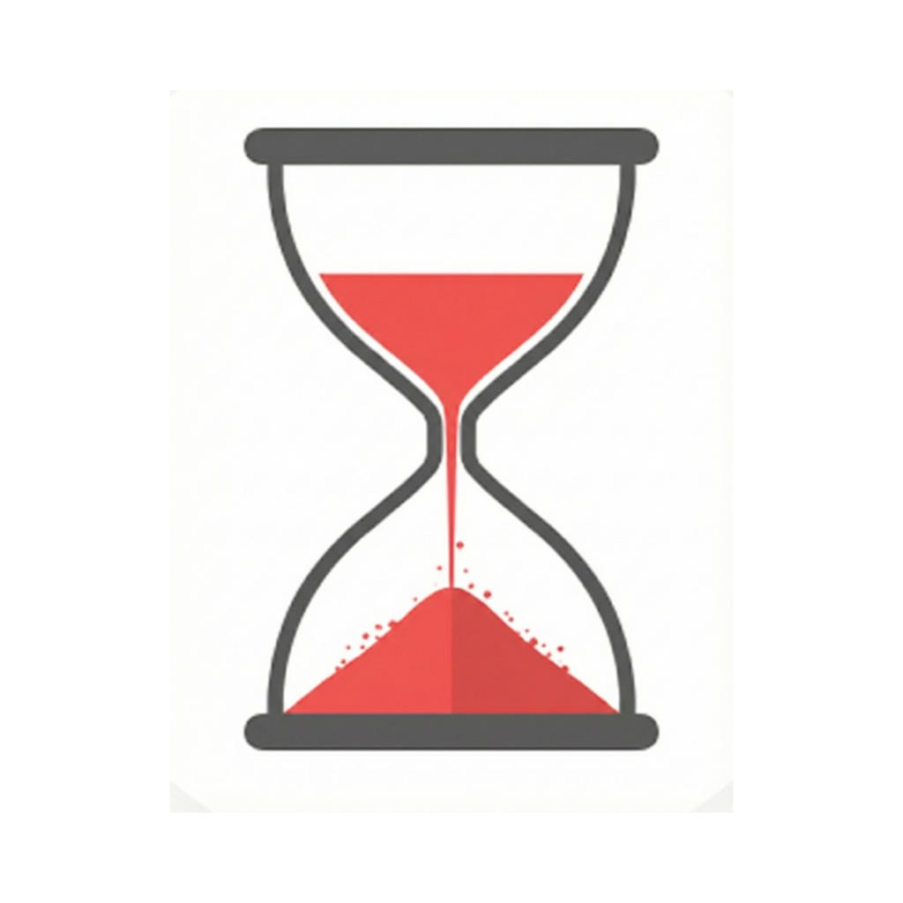
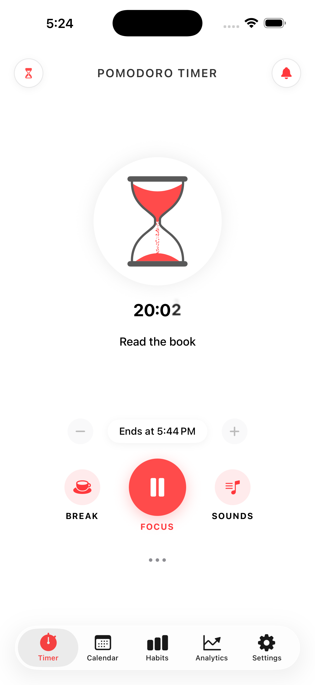
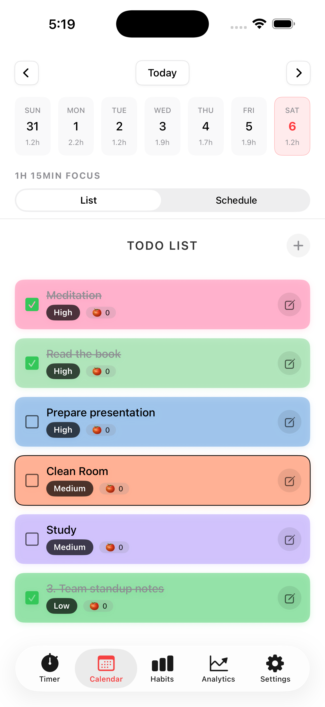
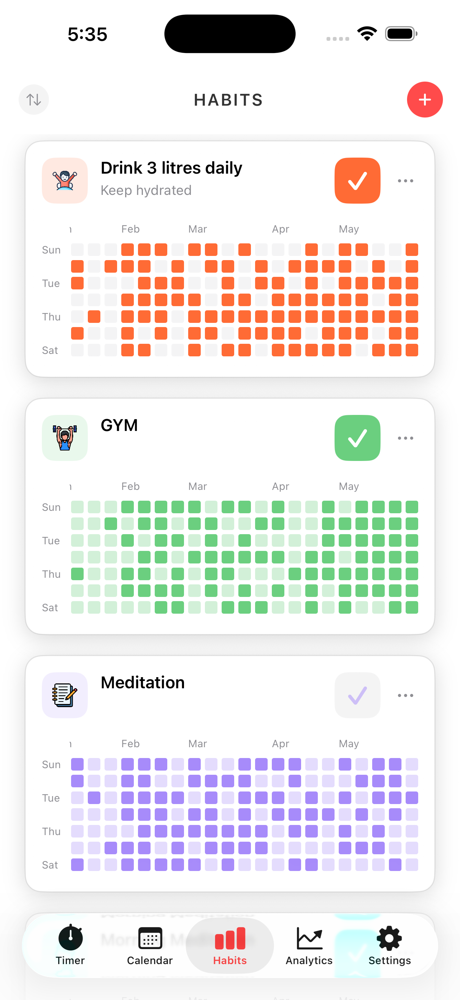
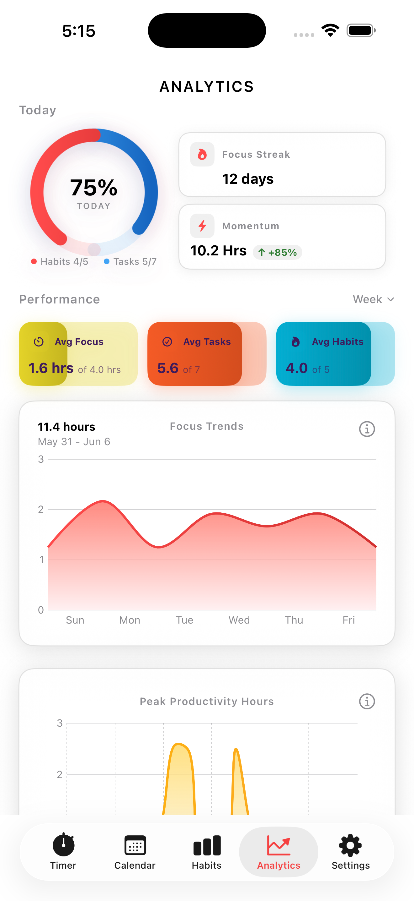
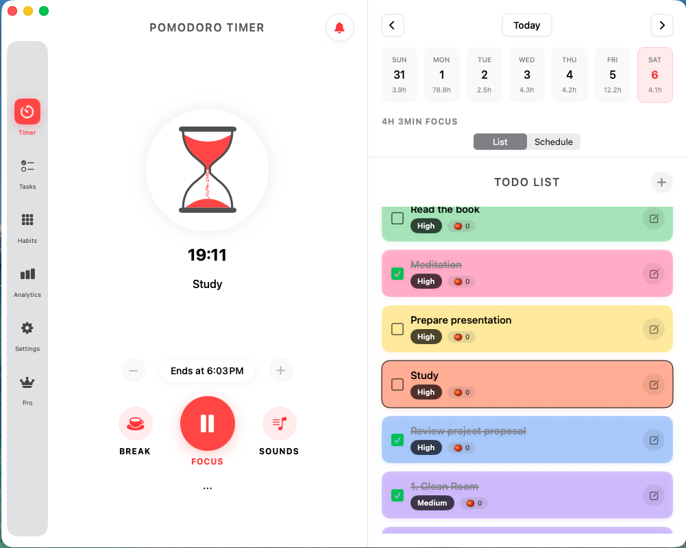
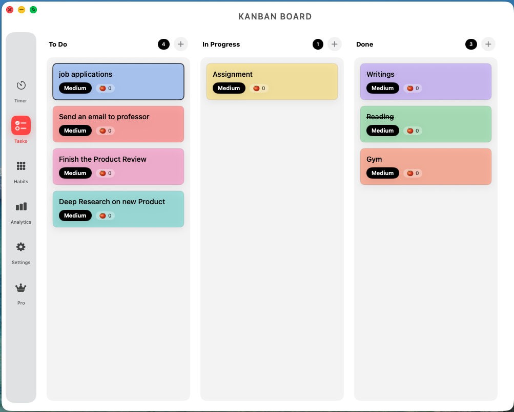
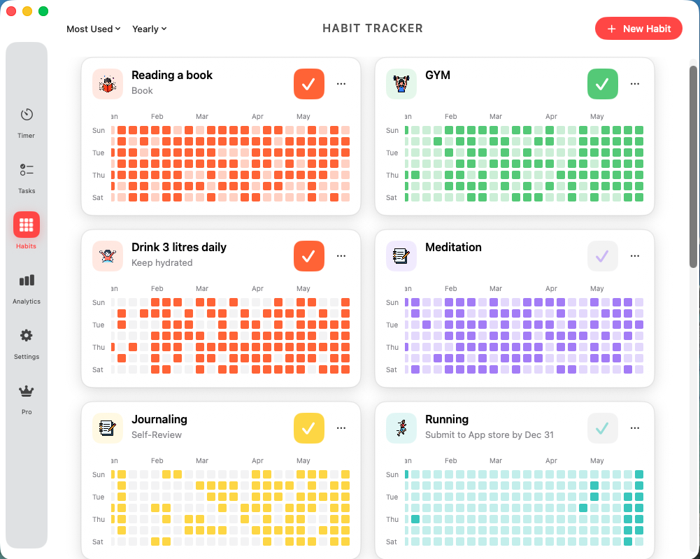
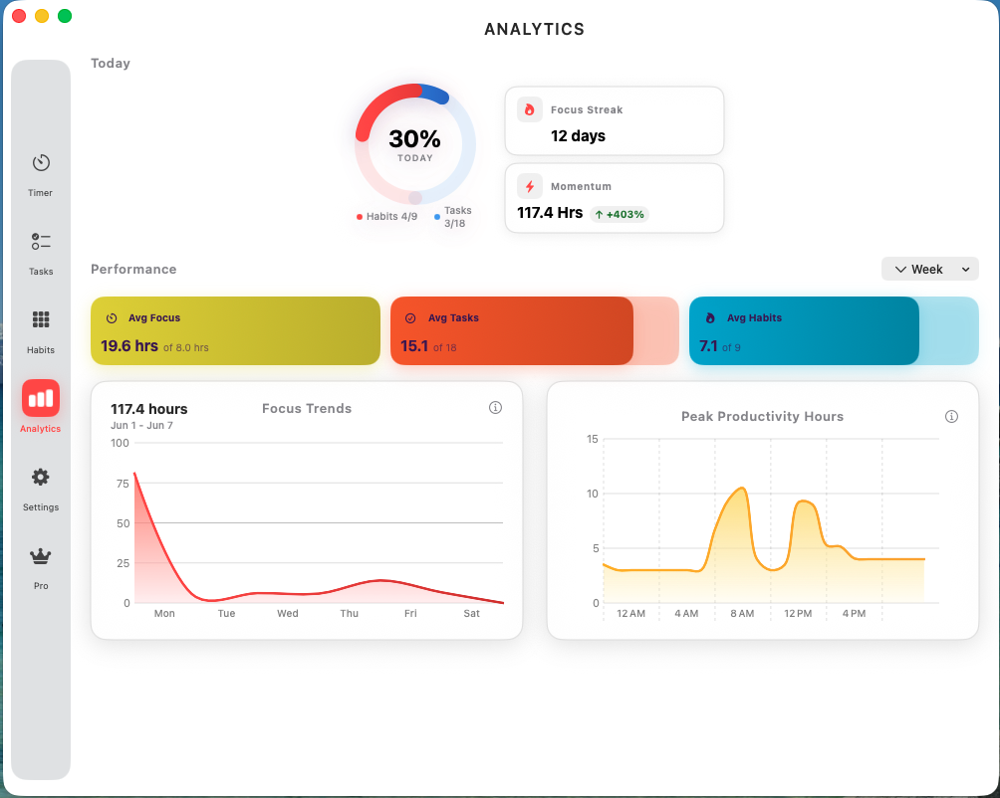

Pomodoro Timer
Start a focus session in one tap. Customize work and break intervals to match your energy. Track every session automatically.

Plan TodoFocus timer + Tasks + Habits
Plan Todo combines a Pomodoro focus timer, task management, and habit tracking in a single, distraction-free app — so you can spend less time planning and more time doing.


Six core tools designed to help you plan, focus, and build lasting habits — without the bloat.
Start a focus session in one tap. Customize work and break intervals to match your energy. Track every session automatically.
Create tasks with deadlines and priorities. Organize your day around what matters most and check things off as you go.
Build daily streaks with check-in reminders. See your consistency over time and stay motivated with visual progress.
Visualize your focus hours, task completion rates, and habit streaks with clean, at-a-glance charts.
Your data syncs seamlessly across iPhone, iPad, and Mac via iCloud. Start on one device, continue on another.
Your data stays yours. Plan Todo never sells or shares your personal information. Period.


How it works
No complicated setup. No overwhelm. Just a simple routine that compounds over time.
Add your tasks and set priorities for what matters today.
Launch a Pomodoro timer and work on your top task distraction-free.
Mark off your daily habits and watch your streaks grow.
See how you did with analytics — focus time, tasks done, streaks kept.
One tap to start. Timed intervals keep you in the zone.
See your focus time, task completion, and habit streaks at a glance.
12.5 hrs focused, 34 tasks done, 5-day habit streak.
Native iOS and macOS — your productivity follows you everywhere.

Focus Timer & Tasks

Kanban Board

Habit Tracker

Analytics Dashboard
Calmer focus, stronger routines, and fewer distractions.
“Plan Todo turned my chaotic schedule into predictable, stress-free sprints.”
“The focus sessions feel like a coach in my pocket. I finish my top priorities every day.”
“We saw a real drop in meeting fatigue after using the scheduling rituals together.”
Everything you need to know about Plan Todo.
Plan Todo is a productivity app for iOS and macOS that combines a Pomodoro focus timer, task manager, and habit tracker in one clean interface.
Plan Todo offers a free tier with core features. Premium plans unlock advanced analytics, unlimited habits, and more — starting at $4.99/month.
Yes. Plan Todo is available on iOS and macOS. Your data syncs across all your devices automatically.
Absolutely. We never sell user data and keep analytics anonymized by default. You can delete your account and all data anytime.
Yes. Plan Todo works fully offline. Your tasks, habits, and focus sessions are saved locally and sync when you're back online.
Join the waitlist and be the first to know when Plan Todo launches on the App Store.